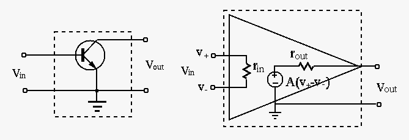
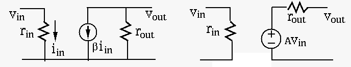
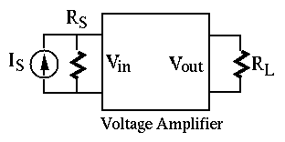
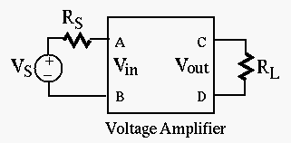
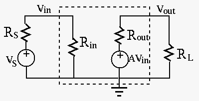
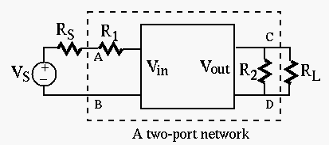
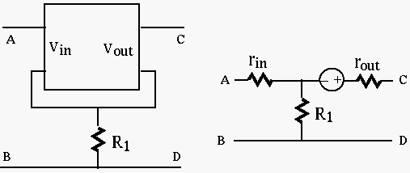
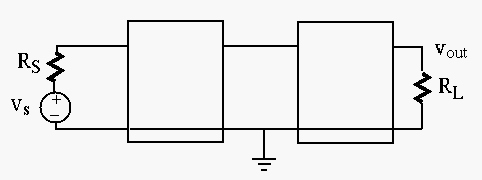

Next: About this document ... Up: Chapter 2: Circuit Principles Previous: Two-Port Networks
All circuits we have discussed so far are only composed of passive components (resistors, capacitors and inductors) driven by current and/or voltage sources. Later we will consider circuits containing active components such as bipolar junction transistors (BJT), field-effect transistors (FET), operational amplifiers (op-amps) containing many transistors, and voltage amplifiers. These active components can be considered as controlled voltage or current sources as functions (typically linear) of the input voltage or current.
 : It is desirable to have
a large so that little input current is drawn from the source,
i.e., the source is minimally affected by the amplifier as a load.
Ideally
.
: It is desirable to have
a large so that little input current is drawn from the source,
i.e., the source is minimally affected by the amplifier as a load.
Ideally
.
 in op-amp):
The open-circuit voltage
in op-amp):
The open-circuit voltage  across the output port is related
to the input voltage
across the output port is related
to the input voltage  by
.
by
.
 in BJT transistor):
The short-circuit current
in BJT transistor):
The short-circuit current  through the output port is related
to the input current
through the output port is related
to the input current  by
.
by
.


Example 1: Consider the circuit below containing an active component,
a voltage amplifier, model by the three parameters , and
, driven by either a current source
or a voltage
with internal resistance  :
:
 
| (129) |
| (130) |
and  , we want to maximize by
maximizing and minimizing .
, we want to maximize by
maximizing and minimizing .

 : This is the resistance between
the two terminals A and B of the input port, while a load is
connected to the output port between terminals C and D:
: This is the resistance between
the two terminals A and B of the input port, while a load is
connected to the output port between terminals C and D:
| (131) |
is affected by the load .
 : According to Thevenin's theorem,
any one-port network can be treated as an ideal voltage source in
series with a resistance
: According to Thevenin's theorem,
any one-port network can be treated as an ideal voltage source in
series with a resistance  . We apply this theorem to the output port
and define the output resistance as the Thevenin resistance
. We apply this theorem to the output port
and define the output resistance as the Thevenin resistance
| (132) |
is applied
to the input port. In general, is affected by of the source.
 : This is the ratio of the
open-circuit output voltage (
) to an ideal voltage
source
: This is the ratio of the
open-circuit output voltage (
) to an ideal voltage
source
| (133) |
Example 2:

Find , , and of this two-port network containing
 and
and  as well as the amplifier modeled by ,
and the open-circuit voltage gain .
as well as the amplifier modeled by ,
and the open-circuit voltage gain .
| (134) |
can be found as the resistance between the two
terminals C and D of the output port when the voltage source of the amplifier
is turned off (short-circuit), i.e.,
.
 across the output port to the voltage
across the output port to the voltage  across the input port, when the
output port is an open circuit, i.e.,
.
across the input port, when the
output port is an open circuit, i.e.,
.
 |
|||
|
|||
|
(135) |
,
and can be used in more complicated circuits.
Example 3:
A 2-port network with a voltage aplifier modeled by , and
voltage gain on the left can be modeled by the circuit on the right.
Find the parameters , and of the two-port network
with the voltage amplifier embedded.

across and  across , respectively:
across , respectively:
| (136) |
| (137) |
| (138) |
We first find the short-circuit current
at the output port. Assume a voltage source with internal resistance
is applied to the input port while the output port is short-circuited.
Applying KVL to the two loops of the circuit, we get:
| (139) |
| (140) |
and , we get
| (141) |
| (142) |
| (143) |
is affected by internal resistance of the source.
When  ,
,
| (144) |
. The input resistance is
where is
the input current. Applying the KVL to the two loops of this circuit, we
get
| (145) |
| (146) |
and ,
we get
| (147) |
| (148) |
is affected by the load . When
,
, i.e., the input resistance is much increased.
Moreover, if , the circuit is reduced to the original voltage
amplifier with
.
shared by both the input and output loops
serves as a negative feedback:
| (149) |
is reduced but both the input and
output resistances are improved, i.e., is increased and the
is reduced.
Example 4: (Homework)
The transistor emitter follower and the op-amp buffer shown below are very important circuits which find wide applications in practice. These two circuits can be similarly modeled based on the individual models of the transistor and the an op-amp (the inner dashed boxes), also shown in the figure. Note that the two models are equivalent (the outter dashed boxes), as the non-ideal current and voltage in the models can be converted to each other.

The parameter of the transistor model is its current gain,
and the parameter of the op-amp model is its voltage gain, both
of them are much greater than 1. And for the op-amp, we also have
.
We can now find the three parameters of the model of the two circuits:
is the current through the
input port, when a load is connected to the output port between
C and D.
 , where and
are the open-circuit voltage and short-circuit current when
an ideal source voltage (with ) is applied to the input
port.
, where and
are the open-circuit voltage and short-circuit current when
an ideal source voltage (with ) is applied to the input
port.
Example 5: (Homework)

Two amplifiers with parameters , , and , ,
, respectively, can be connected in cascade as shown in the figure.
Given a voltage source in series with an internal resistance ,
find the output voltage. To maximize the output , how would you
change the values of the six parameters?
Find the power gain of the system.
Example 6: (Homework)
The input and output resistances and , as well as the voltage
gain of a two-port network can be obtained experimentally. First,
connect an ideal voltage source (a new battery with very low internal
resistance) in series with a resistor , and then connect load of
two different resistances to the output port. Now the three parameters can
be derived from the known values of , and the two measurements of
the load voltage , corresponding to the two resistance values used.
Assume ,
, and the input voltage is measured to be
; also, assume the two different load resistors used are
and
respectively, with the two corresponding
output voltage
and . Find , and .